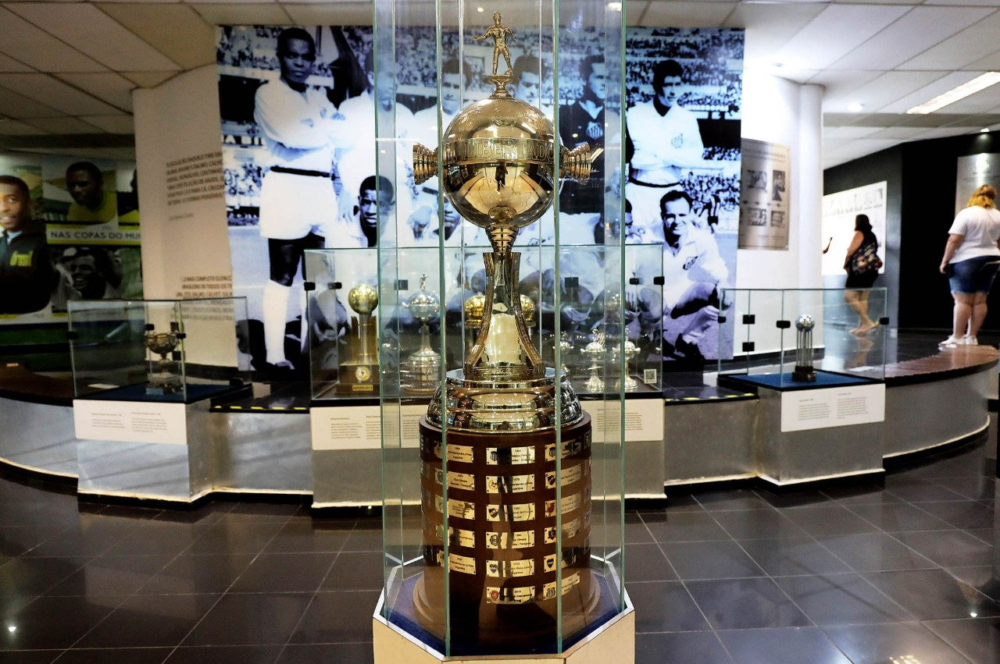
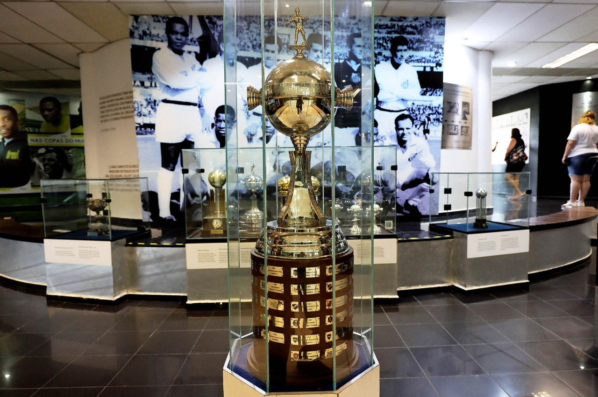

Conquistas do Santos Futebol Clube
Ao longo de sua história, o Santos construiu uma das trajetórias mais vitoriosas do futebol mundial. Desde os tempos de Pelé até os craques da nova geração, o Peixão coleciona títulos que marcaram épocas. Confira abaixo as principais conquistas:
Títulos Internacionais
-
Copa Libertadores da América: 1962, 1963, 2011
Mundial Interclubes: 1962, 1963
Recopa Sul-Americana: 2012
Supercopa dos Campeões Intercontinentais: 1968
Títulos Nacionais
-
Campeonato Brasileiro: 8 títulos (1961, 1962, 1963, 1964, 1965, 1968, 2002, 2004)
Copa do Brasil: 2010
Supercopa do Brasil: 1968
Torneio Rio-São Paulo: 1959, 1963, 1964, 1966
Títulos Estaduais
-
Campeonato Paulista: 22 títulos
Taça dos Campeões Estaduais: 1935
Campeonato Paulista Extra: 1937
Outros Torneios
-
Torneios e amistosos internacionais: dezenas de títulos conquistados ao redor do mundo
Galeria de Troféus
 
